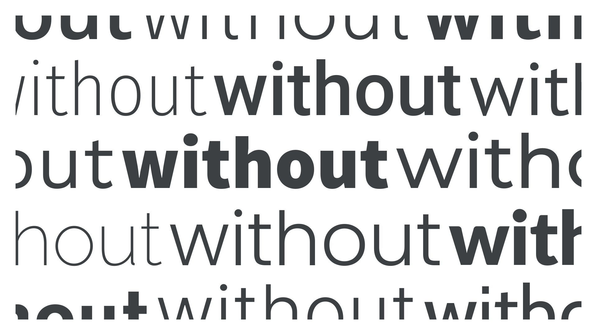

Sans serif
By Google Fonts Knowledge contributors · Google Fonts Knowledge.
Original article · Source on GitHub · CC BY-SA 4.0. Text, illustrations and existing credits reproduced from the licensed Knowledge repository. Open Shelf adapted the layout and links; these adaptations are also CC BY-SA 4.0. No endorsement implied.
A sans serif—or simply “sans”—is a typeface designed without serifs (from “sans”, the French word for “without”). Typically, sans serif faces have lower stroke contrast and larger x-heights than serifs.

There are many sub-genres of sans serif type. For a detailed look at classifications broken down by genre and historical period, please read our article: “Making sense of typographic classifications.”
Note that although not all characters naturally have serifs (such as an “o”), the classification applies to characters that would naturally have serifs (such as an “h”).
Examples of sans serif typefaces include Roboto, Open Sans, Poppins, Noto Sans, Work Sans, and Epilogue.